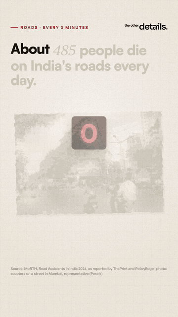

RoadsEvery three minutes
- 485road deaths a day in India, about one every three minutes
- 46%of road deaths were two-wheeler riders
- 2 in 3people killed were aged 18 to 45
- ~70%of road deaths were linked to over-speeding; the deadliest hours are 6 pm to 9 pm
Source: MoRTH, Road Accidents in India 2024, as reported by ThePrint and PolicyEdge
Read the study → Watch the reels on YouTube ↗